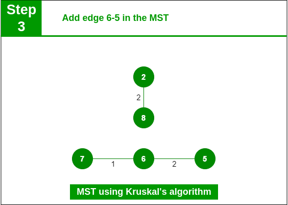
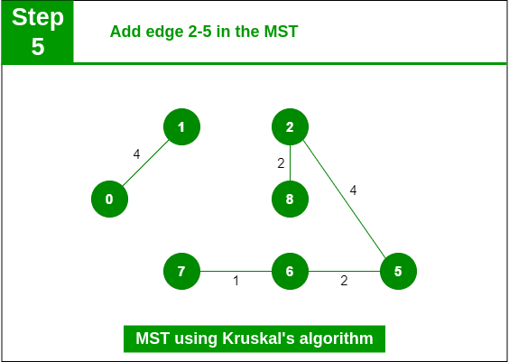
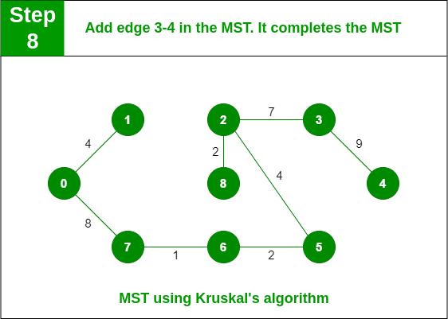

Input Graph

The graph contains 9 vertices and 14 edges. So, the minimum spanning tree formed will be having (9 - 1) = 8 edges. After sorting:
Step 1: Pick edge 7-6. No cycle is formed, include it.

Add edge 7-6 in the MST
Step 2: Pick edge 8-2. No cycle is formed, include it.

Add edge 8-2 in the MST
Step 3: Pick edge 6-5. No cycle is formed, include it.
Add edge 6-5 in the MST
Step 4: Pick edge 0-1. No cycle is formed, include it.

Add edge 0-1 in the MST
Step 5: Pick edge 2-5. No cycle is formed, include it.
Add edge 2-5 in the MST
Step 6: Pick edge 8-6. Since including this edge results in the cycle, discard it. Pick edge 2-3: No cycle is formed, include it.

Add edge 2-3 in the MST
Step 7: Pick edge 7-8. Since including this edge results in the cycle, discard it. Pick edge 0-7. No cycle is formed, include it.

Add edge 0-7 in MST
Step 8: Pick edge 1-2. Since including this edge results in the cycle, discard it. Pick edge 3-4. No cycle is formed, include it.
Add edge 3-4 in the MST